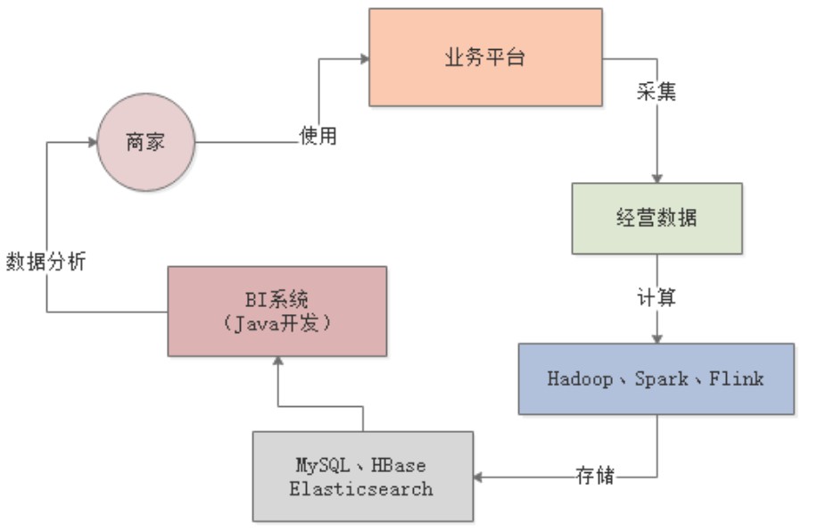
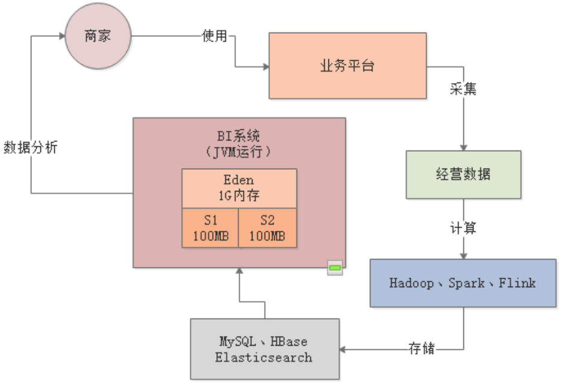
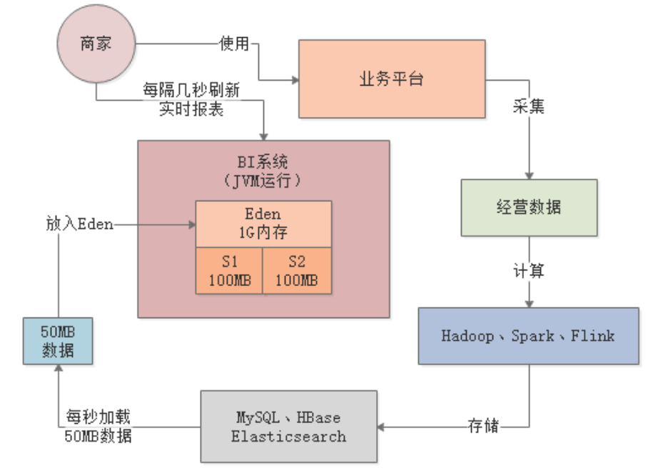
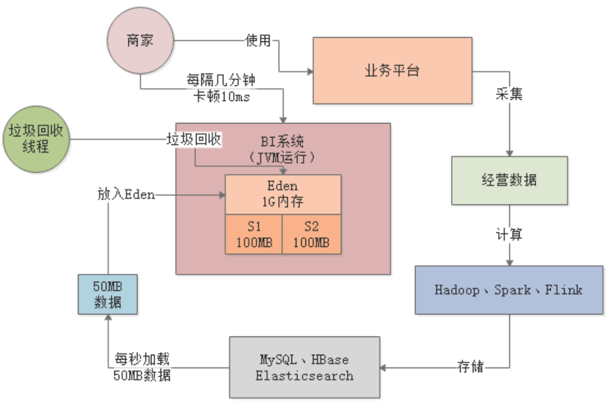
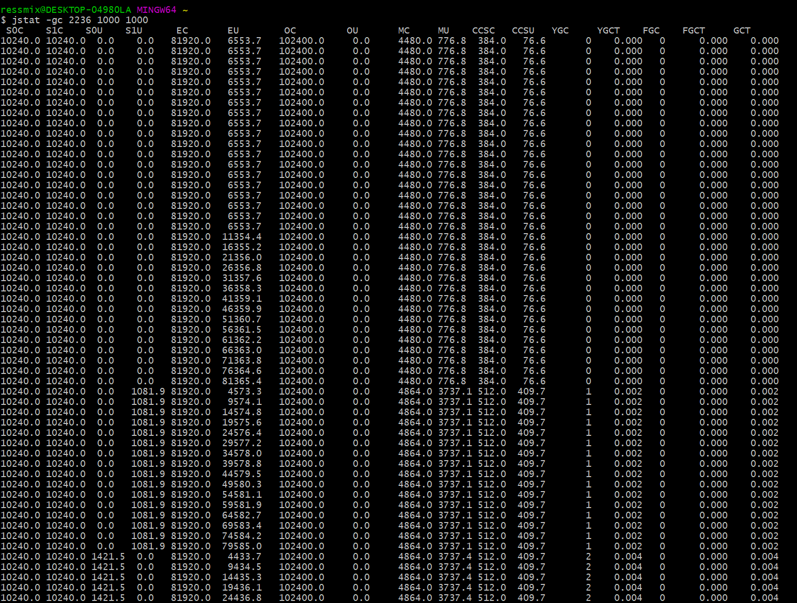
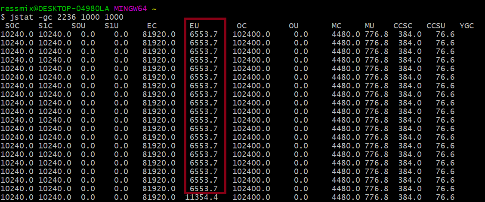
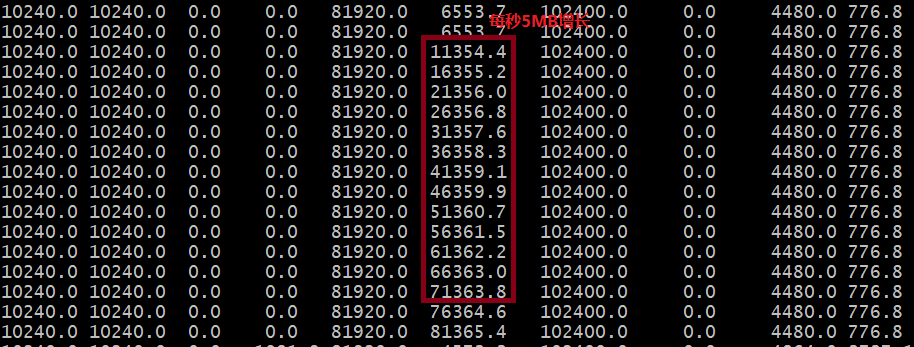
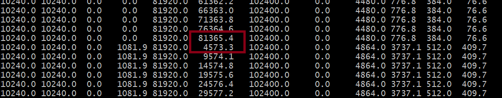

本章和下一章，我们将通过之前讲过的两个案例，看看如何在生产环境下使用jstat对JVM运行情况进行分析。我们先来回顾下商户BI系统。
假设生产环境有一个商户BI系统，用于商户日常经营数据的分析和报表输出，其大致运行逻辑如下：

系统刚上线时，商户数量只有几万家，生产机器配置是4核8G，新生代分配1.5G，Eden区有1G：

每个商户的主页，前端每隔几秒钟就会发送一个请求给BI系统，用于生成一种实时报表。每台机器差不多每秒抗500个请求，由于报表需要的数据量比较大，一般每个请求需要加载约100KB的数据到内存中，每秒500个请求总共就是50MB数据，每次Young GC过后存活对象也就几十MB：

根据上述内存使用模型的估算，每秒需加载50MB数据到Eden区，那3分钟左右就会将Eden区占满，触发Young GC。在1G的内存空间中进行Young GC的效率是很高的，基本上10ms左右就可以搞定，所以BI系统每运行几分钟就会出现10ms左右的卡顿，但是对终端用户和系统运行基本没有影响：

我们通过一段代码来模拟下上述情况，先来看下JVM参数配置。
-XX:NewSize=104857600 -XX:MaxNewSize=104857600 -XX:InitialHeapSize=209715200 -XX:MaxHeapSize=209715200 -XX:SurvivorRatio=8 -XX:MaxTenuringThreshold=15 -XX:PretenureSizeThreshold=3145728 -XX:+UseParNewGC -XX:+UseConcMarkSweepGC -XX:+PrintGCDetails -XX:+PrintGCTimeStamps -Xloggc:gc.log
上述，我们把Java堆内存设置为200MB，其中年轻代100MB，Eden占80MB，Survivor各占10MB，老年代100MB。
public class Demo1 {
public static void main(String[] args) throws InterruptedException {
Thread.sleep(30000); // main线程休眠30s，以便jstat命令通过PID观察
while (true) {
loadData();
}
}
private static void loadData() throws InterruptedException {
byte[] data = null;
for (int i = 0; i < 50; i++) {
data = new byte[100 * 1024]; // 100KB
}
data = null;
Thread.sleep(1000); // 模拟上述操作全部发生在1s内
}
}
上述程序代码中，while(true)用来模拟每秒50次请求，每次请求加载100KB数据，也就是每秒5MB数据。
当我们启动程序后，main线程会阻塞30s，此时我们可以先通过jps命令查找当前JVM的进程ID——2236：
然后在30s内执行下述命令，统计JVM状态，每隔1s打印一次，共打印1000次：jstat -gc 2236 1000 1000
我们来看下输出结果：

首先，看下EU那列，表示Eden区的内存使用情况，刚开始一直都是6MB多的使用量，此时main线程还在阻塞中：

之后，线程恢复运行，Eden区的使用空间每秒钟都在增长，根据差值计算大概就是每秒5MB，与我们的代码逻辑吻合：

当Eden区使用接近80MB时，再要分配就失败了，此时触发了一次Young GC，Eden区的使用空间降低到4573.3KB：

针对上述示例，我们可以通过jstat命令清晰的看出，新生代对象增速为5MB/s左右，大约十几秒就会触发一次Young GC，每次Young GC回收大约70MB空间，耗时1ms，所以Young GC的速度是很快的，即使回收800MB空间，也就耗时10ms左右。
本章，我们通过jstat命令分析了BI系统中新生代对象的GC情况。通过jstat命令，我们清晰的看到虽然系统每隔十几秒就会进行一次Young GC，但是Young GC耗时很小，而且没有存活对象进入老年代，所以系统运行的效率还是挺高的。